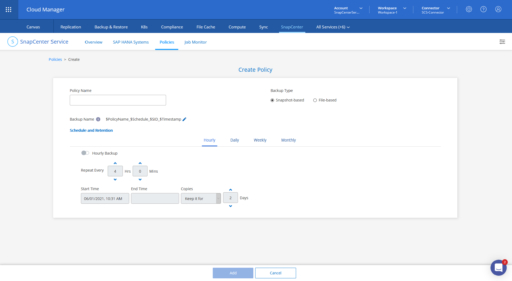
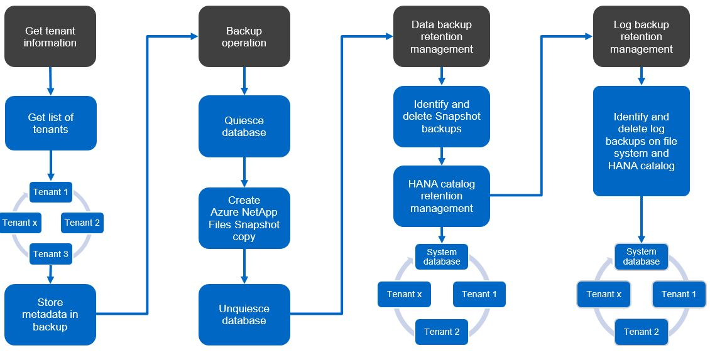
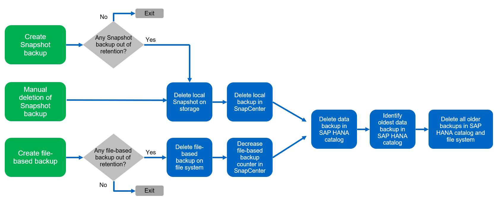

要求變更文件
要求變更文件 編輯此頁面
編輯此頁面 瞭解如何作出貢獻
瞭解如何作出貢獻服務概念與最佳實務做法SnapCenter
資料保護策略
在設定SnapCenter 「支援服務」之前、您必須根據各種SAP系統的RTO和RPO需求來定義資料保護策略。
常見的方法是定義系統類型、例如正式作業、開發、測試或沙箱系統。同一系統類型的所有SAP系統通常具有相同的資料保護參數。
您必須定義下列參數：
-
Snapshot備份的執行頻率
-
Snapshot備份保留多久
-
執行區塊完整性檢查（檔案型備份）的頻率
-
保留區塊完整性檢查備份（檔案型備份）多久？
下表顯示系統類型的正式作業、開發及測試資料保護參數範例。對於正式作業系統、已定義高備份頻率、並會執行每週檔案型備份。測試與開發系統的需求較低、而Snapshot備份的排程頻率較低。
| 參數 | 正式作業系統 | 開發系統 | 測試系統 |
|---|---|---|---|
Snapshot備份頻率 |
每4小時 |
每6小時 |
每12小時 |
Snapshot備份保留 |
3天 |
3天 |
3天 |
區塊完整性檢查頻率 |
每週一次 |
每週一次 |
每週一次 |
區塊完整性檢查保留 |
4週 |
2週 |
1週 |
下表顯示必須針對Snapshot備份作業的資料保護參數設定的原則。
| 參數 | 原則SnapshotEvery4H | 原則快照每6小時 | 原則SnapshotEvery12h |
|---|---|---|---|
備份類型 |
快照複本為基礎 |
快照複本為基礎 |
快照複本為基礎 |
排程類型 |
每小時 |
每小時 |
每小時 |
保留 |
計數= 18 |
計數= 12 |
計數= 3 |
備份排程 |
每4小時 |
每6小時 |
每12小時 |
下表顯示必須針對檔案型備份作業的資料保護參數設定的原則。
| 參數 | 原則檔案Based4Week | 原則檔案Based2Weeks | 原則FileBased1Week |
|---|---|---|---|
備份類型 |
檔案型 |
檔案型 |
檔案型 |
排程類型 |
每週 |
每週 |
每週 |
保留 |
計數= 4 |
計數= 2 |
計數= 1 |
備份排程 |
每週日 |
每週日 |
每週日 |
支援服務政策SnapCenter
在支援服務中SnapCenter 、單一保護原則包含下列參數：
-
備份類型
-
快照型
-
檔案型
-
-
排程與保留
-
排程：每小時、每日、每週、每月。單一原則可以有多個排程。
-
每個排程都會設定開始或結束時間和頻率。
-
每個排程都會設定保留。保留時間可以是以時間為基礎、也可以是以計數器為基礎。
-
下圖顯示原則組態的快照。

備份作業
SAP推出採用HANA 2.0 SPS4的多租戶系統、支援Snapshot備份。在SAP HANA MDC系統中、租戶組態不一定是靜態的。您可以新增或刪除租戶。將HANA資料庫新增至支援中心時、無法依賴於所發現的組態。SnapCenter SnapCenter支援服務必須知道在執行備份作業時、哪些租戶可以使用。SnapCenter
因此、在每次備份作業中、工作流程的第一步是取得租戶資訊。下一步是Snapshot備份作業本身。此步驟包括觸發HANA備份儲存點的SQL命令、Azure NetApp Files 以及用來關閉HANA備份儲存點的SQL命令。HANA資料庫會使用Close命令、更新系統資料庫和每個租戶的備份目錄。

|
當一或多個租戶停止時、SAP不支援針對MDC系統進行Snapshot備份作業。 |
為了保留資料備份和HANA備份目錄管理、SnapCenter 效益分析服務必須針對系統資料庫和第一步中識別的所有租戶資料庫執行目錄刪除作業。以記錄備份的相同方式、SnapCenter 「還原服務」工作流程必須在備份作業的每個租戶上運作。
下圖顯示備份工作流程的總覽。

HANA資料庫Snapshot備份的備份工作流程
下列順序執行SAP HANA資料庫的備份：SnapCenter
-
從HANA資料庫讀取租戶清單。
-
將租戶資訊儲存在SnapCenter 適用於備份作業的「服務」中繼資料中。
-
觸發SAP HANA全域同步備份儲存點、在持續層上建立一致的資料庫映像。
對於SAP HANA MDC單一或多個租戶系統、系統資料庫和每個租戶資料庫都會建立同步的全域備份儲存點。
-
為Azure NetApp Files HANA系統設定的所有資料磁碟區建立「Snapshot Snapshot複本」。在單一主機HANA資料庫的範例中、只有一個資料磁碟區。有了SAP HANA多主機資料庫、就有多個資料磁碟區。
-
在Azure NetApp Files SAP HANA備份目錄中登錄「Snapshot Snapshot備份」。
-
刪除SAP HANA備份儲存點。
-
根據Azure NetApp Files 為備份所定義的保留原則、刪除資料庫及SAP HANA備份目錄中的「Snapshot複本」和備份項目。Hana備份目錄作業是針對系統資料庫和所有租戶進行。
-
刪除檔案系統和SAP HANA備份目錄中的所有記錄備份、這些備份比SAP HANA備份目錄中識別的最舊資料備份還舊。這些作業是針對系統資料庫和所有租戶執行。
區塊完整性檢查作業的備份工作流程
下列順序執行區塊完整性檢查：SnapCenter
-
從HANA資料庫讀取租戶清單。
-
觸發系統資料庫和每個租戶的檔案型備份作業。
-
根據針對區塊完整性檢查作業所定義的保留原則、刪除資料庫、檔案系統和SAP HANA備份目錄中的檔案型備份。系統資料庫和所有租戶都會在檔案系統上刪除備份、並執行HANA備份目錄作業。
-
刪除檔案系統和SAP HANA備份目錄中的所有記錄備份、這些備份比SAP HANA備份目錄中識別的最舊資料備份還舊。這些作業是針對系統資料庫和所有租戶執行。
資料與記錄備份的備份保留管理與管理
資料備份保留管理與記錄備份管理可分為四大領域、包括下列項目的保留管理：
-
Snapshot備份
-
檔案型備份
-
SAP HANA備份目錄中的資料備份
-
在SAP HANA備份目錄和檔案系統中記錄備份
下圖概述不同的工作流程、以及每項作業的相依性。以下各節將詳細說明不同的作業。

Snapshot備份的保留管理
根據《支援服務》備份原則中所定義的保留、將Snapshot複本刪除到儲存設備和《支援服務》儲存庫中、即可處理SAP HANA資料庫備份和非資料Volume備份的管理工作。SnapCenter SnapCenter SnapCenter
保留管理邏輯會在SnapCenter 每個支援工作流程中執行、
您也可以在SnapCenter 不更新的情況下、手動刪除Snapshot備份。
檔案型備份的保留管理
透過刪除檔案系統上的備份、以根據《支援服務》備份原則中定義的保留、支援內部管理檔案型備份。SnapCenter SnapCenter
保留管理邏輯會在SnapCenter 每個支援工作流程中執行、
SAP HANA備份目錄中的資料備份保留管理
當支援服務刪除任何備份（Snapshot或檔案型）時、SAP HANA備份目錄中也會刪除此資料備份。SnapCenter
記錄備份的保留管理
SAP HANA資料庫會自動建立記錄備份。這些記錄備份會在SAP HANA設定的備份目錄中、為每個SAP HANA服務建立備份檔案。
不再需要使用舊於最新資料備份的記錄備份來進行轉送恢復、也可以刪除。
透過執行下列工作、支援在檔案系統層級和SAP HANA備份目錄中管理記錄檔備份：SnapCenter
-
讀取SAP HANA備份目錄、取得最舊且成功的檔案型或Snapshot備份的備份ID。
-
刪除SAP HANA目錄中的所有記錄備份、以及早於此備份ID的檔案系統。
支援服務僅負責內部管理、以進行由還原所建立的備份作業。SnapCenter SnapCenter如果在SnapCenter 不支援的情況下建立其他檔案型備份、您必須確定已從備份目錄中刪除檔案型備份。如果這類資料備份未從備份目錄手動刪除、則可能會成為最舊的資料備份、而且在刪除此檔案型備份之前、不會刪除舊版記錄備份。
|
|
您無法使用目前發行SnapCenter 的版本的支援服務來關閉記錄備份保留管理。 |
Snapshot備份的容量需求
您必須考量儲存層的區塊變更率、相對於傳統資料庫的變更率。由於資料行儲存區的HANA表格合併程序、因此完整的資料表會寫入磁碟、而不只是變更的區塊。如果一天內進行多個Snapshot備份、則客戶群的資料顯示每日變更率介於20%到50%之間。